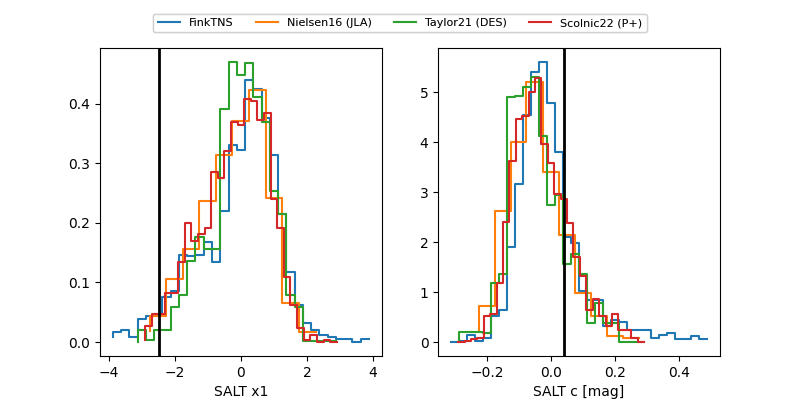

FINK: ZTF25abpuuql
Lasair: ZTF25abpuuql
ALeRCE: ZTF25abpuuql
TNS: 2025xeq
YSE: 2025xeq
ZTF25abpuuql (ztf,fink)
2025xeq (tns,yse)
equatorial (ra, dec) = (355.6756,+15.15388)
galactic (l, b) = (99.3454,-44.54705)

last atlasc=18.87, atlaso=18.69, ztfg=19.27, ztfr=18.95
5 atlasc, 4 atlaso, 6 ztfg, 6 ztfr detections